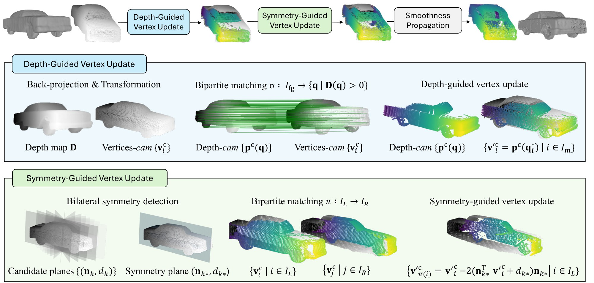
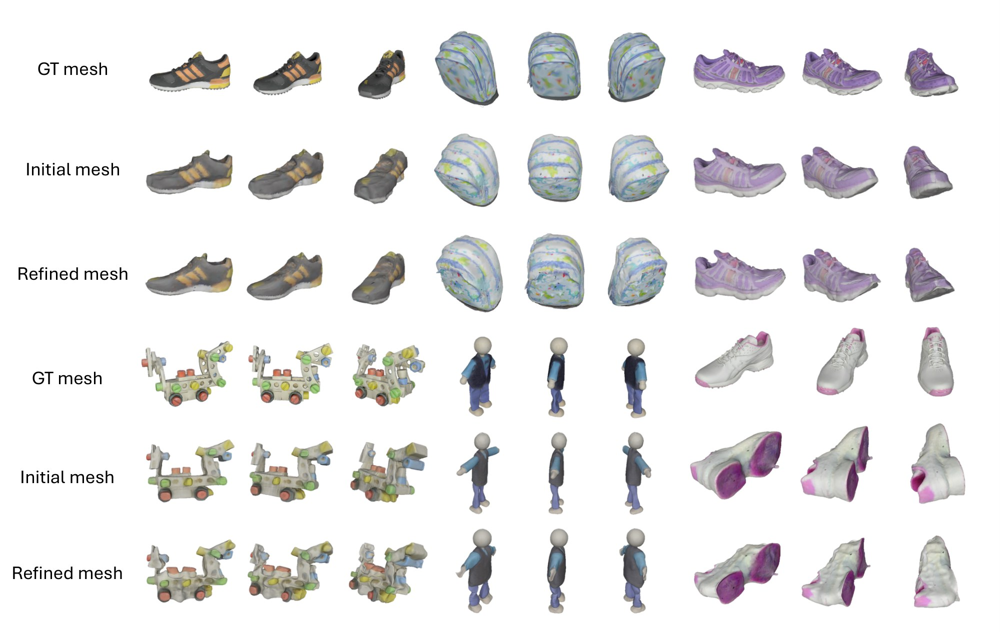
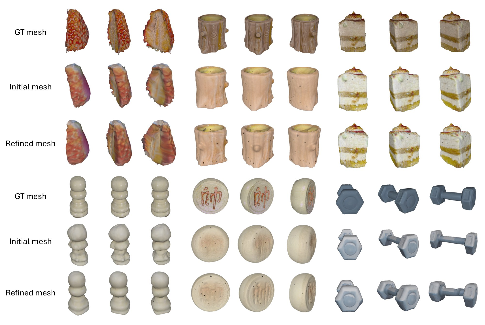

Abstract
Single-view 3D object reconstruction has advanced rapidly, yet many methods still produce meshes that are visually plausible but geometrically inconsistent with the input view, especially near depth discontinuities and self-occlusions. We present a lightweight, plug-and-play RGBD-to-3D refinement framework that improves the mesh of any RGB-to-3D reconstructor without retraining. Given a single depth map at inference time, we first correct the observed surface by bipartite matching between visible mesh vertices and back-projected depth points. To refine occluded regions, we estimate a dominant bilateral symmetry plane and mirror the visible corrections onto the occluded side. We then propagate these sparse corrections over the full mesh with a smoothness solver. Unlike optimization-heavy test-time refinement, every stage is a single closed-form solve, which makes the method orders of magnitude faster. Experiments on GSO and OmniObject3D with five reconstruction backbones show consistent improvements, which persist with pseudo-depth from an off-the-shelf monocular estimator, larger benefits from symmetry on symmetric objects, and favorable accuracy and runtime against prior refinement methods. The refinement also improves an RGB-D-to-mesh reconstructor and transfers to real captures with noisy sensor depth.
Method
Given an initial mesh from any single-view reconstructor, a depth map of the source view, and the camera pose and intrinsics, we estimate per-vertex displacements in three stages.
Depth matching
We rasterize the mesh to find its visible vertices and match them one-to-one to back-projected depth points with a GPU auction solver. Matched vertices move onto the observed surface.
Symmetry transfer
We pick the dominant bilateral symmetry plane with a rasterized signed-distance criterion, then mirror the corrected visible vertices onto matched vertices on the occluded side.
Smooth propagation
The sparse displacements act as Dirichlet handles in a cotangent-Laplacian system, solved once to spread them smoothly over the whole mesh.
Every stage is a single closed-form solve, with no per-instance optimization.
Results
The refinement lowers Chamfer Distance and raises F-score for all five reconstructors on both datasets, with the largest gains for weaker initial meshes and at the stricter F-score threshold.
| Backbone | Chamfer Distance ↓ | F-score (0.05) ↑ | |||
|---|---|---|---|---|---|
| Initial | Refined | Initial | Refined | ||
| GSO | LGM | 0.0438 | 0.0306 (−0.0132) | 0.6715 | 0.7983 (+0.1268) |
| CRM | 0.0365 | 0.0248 (−0.0117) | 0.7473 | 0.8585 (+0.1112) | |
| SF3D | 0.0352 | 0.0236 (−0.0116) | 0.7658 | 0.8693 (+0.1035) | |
| SPAR3D | 0.0356 | 0.0248 (−0.0108) | 0.7671 | 0.8597 (+0.0926) | |
| InstantMesh | 0.0283 | 0.0205 (−0.0078) | 0.8358 | 0.8950 (+0.0592) | |
| Omni | LGM | 0.0397 | 0.0291 (−0.0106) | 0.7185 | 0.8119 (+0.0934) |
| CRM | 0.0334 | 0.0233 (−0.0101) | 0.7833 | 0.8697 (+0.0864) | |
| SF3D | 0.0311 | 0.0210 (−0.0101) | 0.8075 | 0.8910 (+0.0835) | |
| SPAR3D | 0.0331 | 0.0238 (−0.0093) | 0.7945 | 0.8673 (+0.0728) | |
| InstantMesh | 0.0320 | 0.0229 (−0.0091) | 0.8011 | 0.8720 (+0.0709) | |
Mesh refinement on Google Scanned Objects (GSO) and OmniObject3D with ground-truth depth of the input view.
The gains persist with pseudo-depth from a monocular estimator (UniDepth-V2) and with real sensor depth on YCB-V. On Pix3D, refinement takes 1.8 s per instance, compared with about 1.8k s for the optimization-based MeTTA.
Qualitative Results


BibTeX
@inproceedings{seo2026matchpropmesh,
title = {RGBD-to-3D Object Mesh Refinement via Depth Matching and Symmetry Propagation},
author = {Seo, Ahyun and Cho, Minsu},
booktitle = {Asian Conference on Computer Vision (ACCV)},
year = {2026}
}